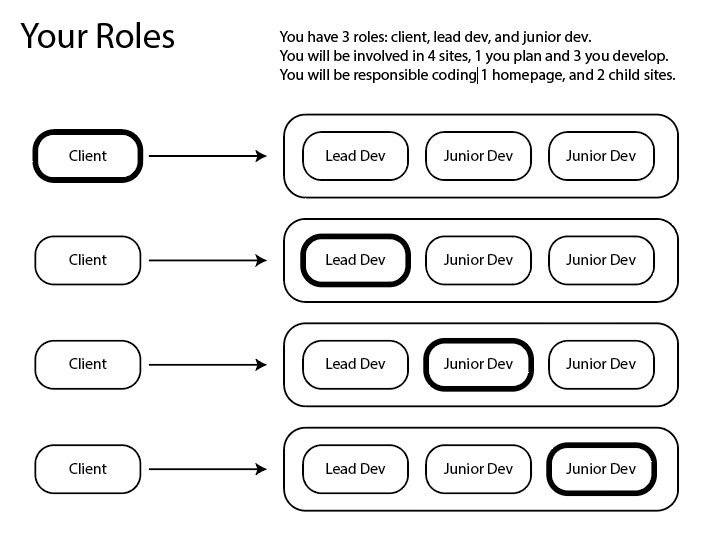

WEB Fundamentals
WDD 130
Client / Developer Team Project
The final for this course will be a team project where you will develop each others personal sites. Everyone will have an opportunity to practice being a client who hires a development team, and everyone will have a chance to lead a development team in building a site for a client. You will be introduced to the online tool GitHub to manage your sites and publish them to the web.

Project Overview
Each student will have 3 roles:
- Client: As a client, your are responsible for the site plan and content creation of your personal website. You will hire 3 other students as your dev team to develop and code your site. You will communicate with the lead developer to make sure your site is completed on time.
- Lead Developer: As a lead developer you will be responsible creating the client's website. Your main job is to code the home page of the client's site. You will manage two other students on your team who will code the two child pages. You will create and manage the GitHub repository where the client's website will be stored. You will need to give the other two students access to the repository (do not give the client access to the repository). You will be responsible for publishing the site online using GitHub pages. You will share the published website with the client on a regular basis.
- Junior Developer: As a junior developer you will be a member of two other dev teams. You will be responsible for creating a child page for each dev team. You will need to communicate with your lead developers to know which pages to work on and how to access the sites.
This week's tasks:
-
Client Tasks
- "Hire" a dev team by contacting the lead developer of your assigned dev team and decided on your preferred communication method.
- Send the lead developer your site plan that must include all content and wireframes.
-
Lead Developer Tasks
- Contact your client and exchange communication information.
- Create the GitHub repository for your client
(name the repository wdd130-clientlastname) - Collect the GitHub usernames from your assigned junior developers and add them to the repository
- Create the index.html page that will be your client's homepage. Write the starter html code with the client's name in the body.
- Publish the site hosted on GitHub pages and post the site url in the repository About section, and in the README file
- Assign each junior developer the page they will code.
-
Junior Developer tasks
- Contact both of your lead developers and give them your GitHub username.
- Request access to the two repositories.
- Create the html files for your assigned pages, and write the start html code for each.
-
Submit
Submit a short report of your progress for this week's task. Be sure to list your lead developer who you hired to develop your site, and the two junior developers you are in charge of, and the two lead developers that you work for.